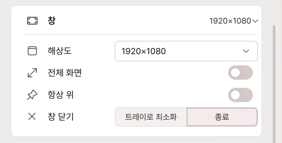
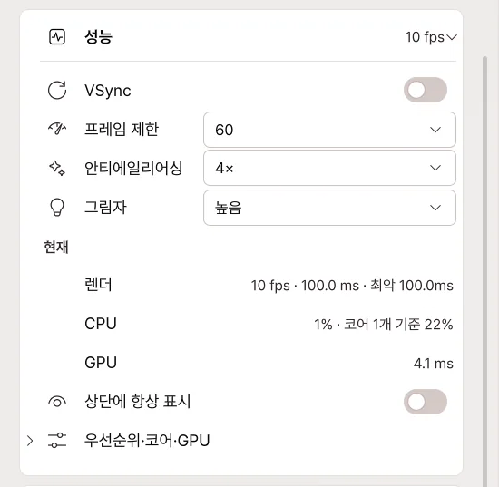
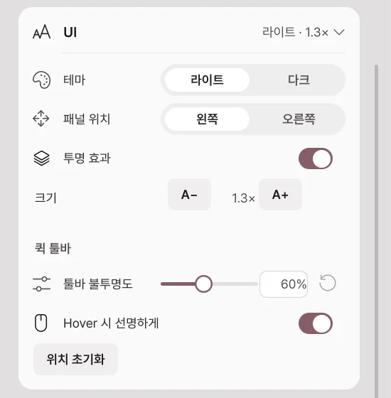
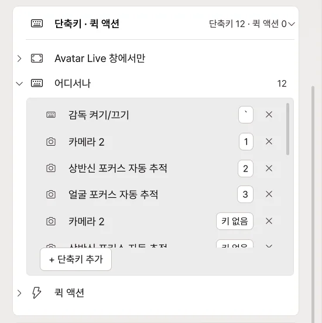
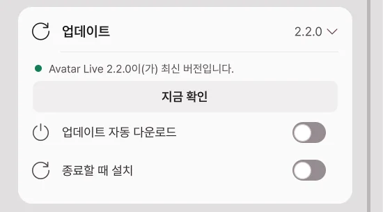
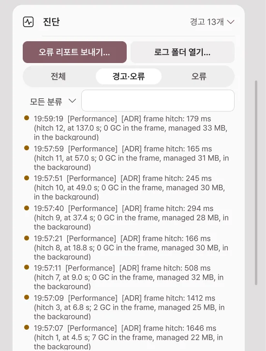
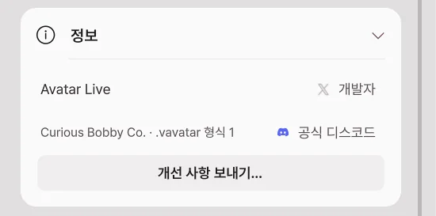

설정
창·성능·언어·단축키와 프로그램 관리를 설정합니다.
창

| 항목 | 바뀌는 것 |
|---|---|
| 창 크기 | 내 모니터에서 프로그램이 차지하는 크기입니다. |
| 전체 화면 | 프로그램을 화면 가득 표시합니다. |
| 항상 위 | 다른 프로그램보다 위에 표시합니다. |
| 창 닫기 | X를 눌렀을 때 종료할지 트레이로 숨길지 정합니다. |
출력 해상도는 출력 이미지에서 따로 정합니다.
성능

- FPS 제한: 높이면 매끄럽고 PC 부담이 늘어납니다. 낮추면 전력 사용을 줄입니다.
- 화질: 높이면 세부가 선명해지고 그래픽 카드 부담이 늘어납니다.
- 그림자: 끄면 가벼워지지만 머리카락·턱 밑 등의 그늘이 줄어듭니다.
- 후처리: 무거운 효과는 카메라 효과에서 하나씩 줄여 봅니다.
언어와 화면 크기

언어에서 한국어·English·日本語·简体中文을 선택합니다. UI에서 테마·패널 위치·글자 크기를 바꿉니다. 글자가 작으면 UI 배율을 높이세요.
단축키

- 단축키 추가를 누릅니다.
- 실행할 동작을 고릅니다.
- 사용할 키 조합을 지정합니다.
- 표정·토글은 누르는 동안 적용할지, 다시 누를 때까지 유지할지 고릅니다.
전역 단축키는 게임이 앞에 있어도 동작합니다. 다른 앱에서 자주 쓰는 키와 겹치지 않게 고르세요.
설정 검색
상단 돋보기에 AFK·미러·Spout2·언어처럼 찾을 설정 이름을 넣습니다. 결과를 누르면 해당 메뉴로 이동하고 카드가 펼쳐집니다.
업데이트

| 버튼·항목 | 하는 일 |
|---|---|
| 지금 확인 | 새 버전이 있는지 확인합니다. |
| 내려받기 | 업데이트 파일을 받습니다. |
| 자동 다운로드 | 켜면 새 업데이트를 미리 받습니다. |
| 다시 시작해서 설치 | 프로그램을 다시 시작해 업데이트를 적용합니다. |
| 종료할 때 설치 | 프로그램을 끌 때 받은 업데이트를 적용합니다. |
시작 시 새 버전을 한 번 확인합니다. 자동 다운로드를 꺼도 업데이트 알림은 표시될 수 있습니다.
라이선스와 진단

- 다른 코드 입력: 라이선스 코드, Pro 업그레이드, DLC 방 팩의 BOOTH 주문번호를 모두 여기에 넣습니다. DLC 주문은 지금 라이선스를 바꾸지 않습니다.
- 오류 리포트 보내기: 문제 설명과 진단 자료를 보냅니다. 실제 전송은 사용자가 선택할 때 진행됩니다. 방송 연동을 쓰는 중이면 연결 상태와 최근 이벤트도 들어갑니다. 자세한 내용은 방송 연동이 안 될 때를 보세요.
- 개선 사항 보내기: 원하는 기능이나 사용 중 불편한 점을 보냅니다.
- 로그 폴더 열기: 진단용 로그가 있는 폴더를 엽니다.
정보

설정 → 정보에서 .vavatar 형식 버전과 개발자 링크를 확인합니다. 공식 디스코드 링크로 소식을 받고 질문을 남길 수 있고, 개선 사항 보내기로 원하는 기능을 알려 줄 수 있습니다.